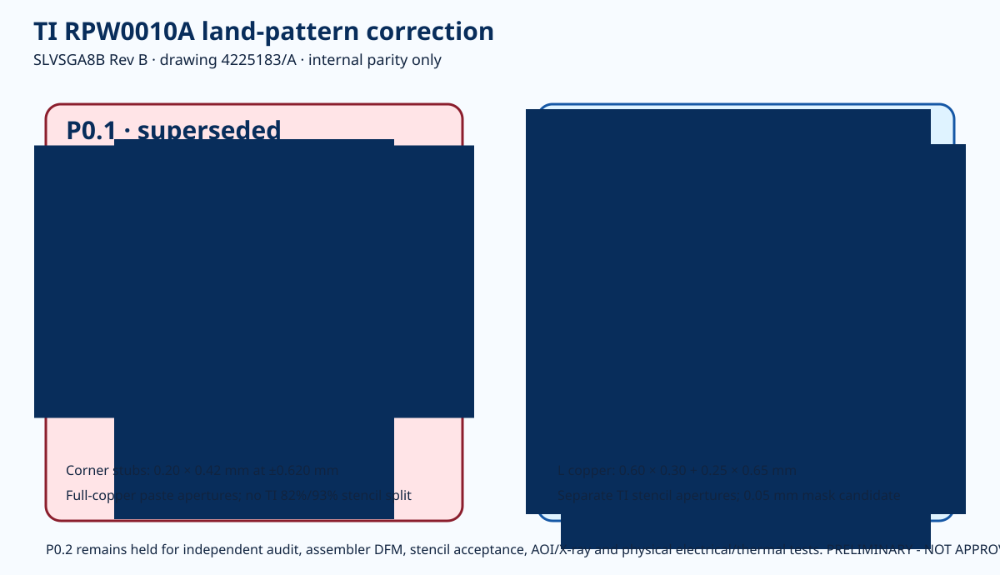
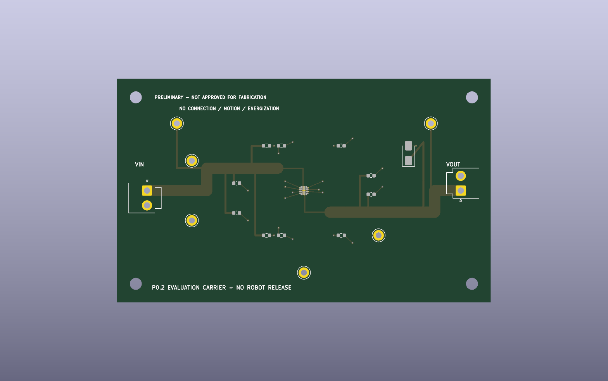
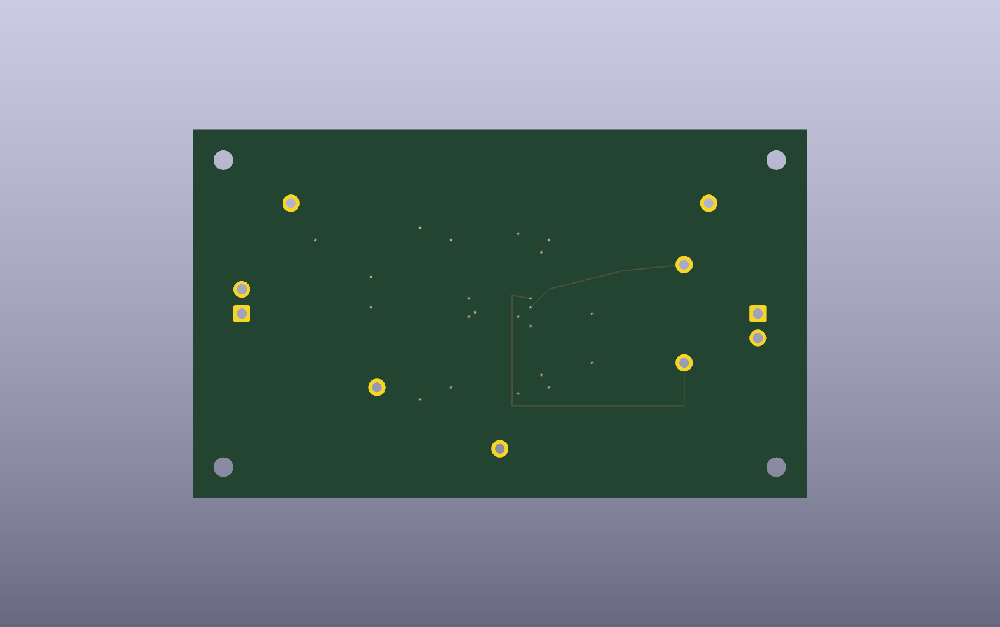

Exact disposition
P0.1 prohibited
0.475 mm spacing, 1.80 mm center lands and undersized corner stubs are superseded.
P0.2 encoded
0.45 mm pitch, 2.40 mm center lands, exact L-shaped copper, TI stencil reductions and 0.05 mm mask candidate.
Hold remains
Independent audit, fabricator/stencil DFM, AOI/X-ray and first-article proof remain mandatory.
Dimension comparison

Machine-readable parity register · Footprint disposition · Residual holds
Native source and renders
KiCad project · KiCad PCB · ERC · DRC


Connected schematic
The circuit is unchanged from R156; only the physical RPW transcription and related manufacturing evidence changed.